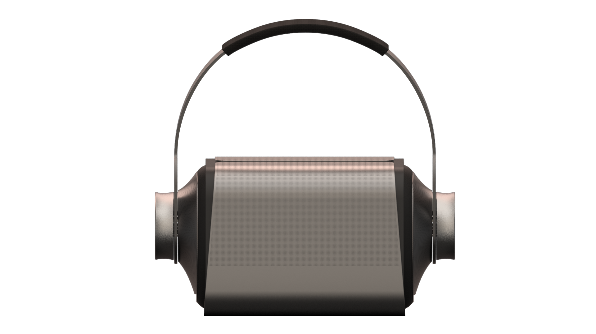
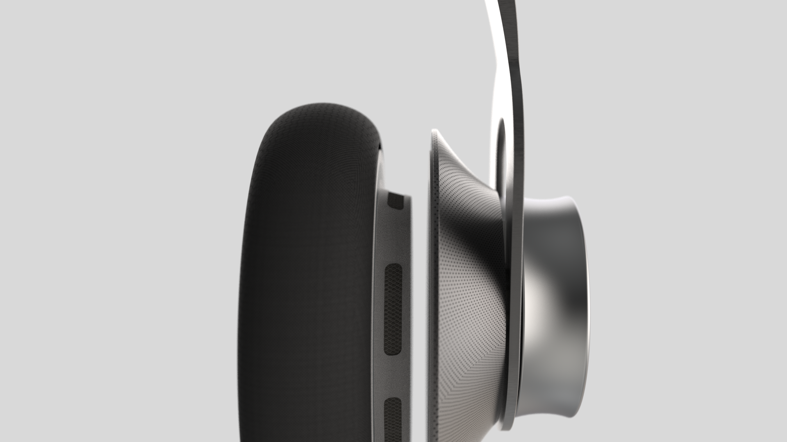
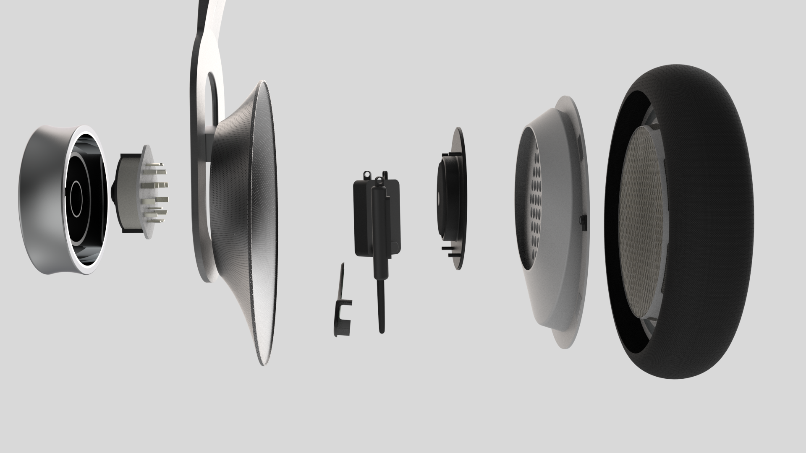

DUO: One Set of Headphones, Two Ways to Listen
DUO is a pair of headphones that mounts directly onto a speaker, turning two separate products into one system built for both solo and group listening.

From two products to one system
DUO takes the two most common ways people listen to music, alone through headphones and together through a speaker, and builds them into a single product. The headphones mount directly onto the speaker body, drawing power and control from it, and detach just as easily for private listening.
The global earphones and headphones market size was valued at USD 25.1 billion in 2019 and is expected to grow at a CAGR of 20.3% from 2020 to 2027, driven by rising consumer preference for enhanced audio experience, a growing music industry, and increasing mobile technology and internet penetration, from casual listening to use by audiophiles and sound professionals in the music and entertainment industry.
How might we create a system that allows individuals to listen to music individually or in a social group?
Finding the mechanism before the form
Early work focused less on how DUO should look and more on how the headphones and speaker should physically and electrically connect, testing several mounting and charging mechanisms before a direction was chosen.
Form and mechanism sketches
Sketching ran alongside quick 3D studies, exploring how a set of headphones could dock onto a speaker body: where the ear cups would sit, how the headband would clear the speaker, and what would hold the two together.

Wireless and contact charging
Several charging approaches were prototyped in parallel: electromagnetic induction, a pogo pin contact connector, and a dedicated charging case. Each aimed to charge the headphones automatically, whether docked onto the speaker or stored away, without a separate cable.


A speaker with headphones built in, or the other way around
The final design keeps the headphones and speaker as two independent products that happen to share a common attachment point, so the system reads correctly whether it is being used apart or together.

Apart, DUO works as a standalone speaker and a standalone pair of headphones. Mounted together, the two become one system.
Detachable ear cups
The ear cups are detachable, allowing easy replacement over the product's life.

Straightforward assembly
The final assembly is straightforward, breaking down into a small number of parts that fit together directly.

Docking, control, and charging
Attaching the headphones onto the speaker lets the knob on the headphones double as a control for the speaker, adjusting its volume and switching tracks. While attached, the headphones charge from a built in charger inside the speaker.

The hook, at a glance
The hook shaped mount creates a strong visual cue that the knob can be turned, communicating the control before it is ever touched.

Compatible with smartphones
DUO pairs directly with a smartphone, shown here through a companion screen that displays the battery levels of both the headphones and the speaker.

What this project made possible
DUO reframes headphones and a speaker as one modular system rather than two separate purchases, letting the same pair of headphones move between private and shared listening by docking onto the speaker rather than switching devices entirely. Working through the mechanism first, from induction and pogo pin charging experiments to the final hook and knob attachment, meant the eventual form followed directly from how the two parts needed to lock, charge, and communicate.